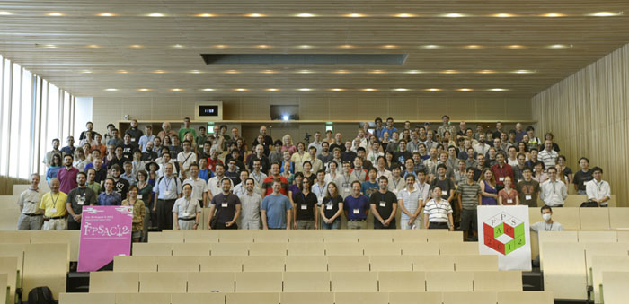

The 24th International Conference on Formal Power Series and Algebraic Combinatorics
July 30–August 3, 2012 / Nagoya University, Nagoya, JAPAN
 Group Photo (PDF/1.66MB)
LOGIN
Copyright © 2011–2012 FPSAC’12 Organizing Committee, and Graduate School of Mathematics, Nagoya University